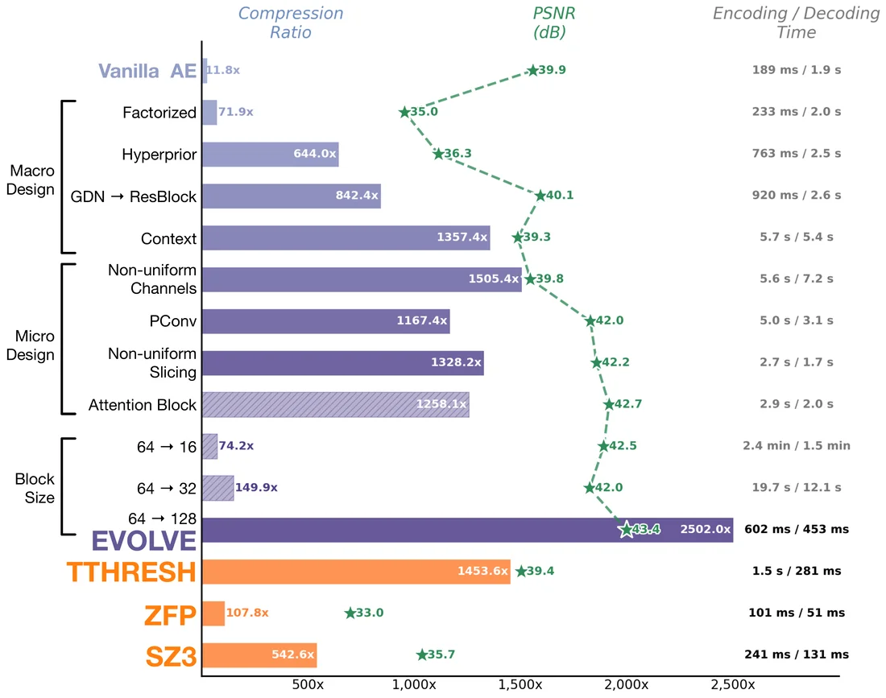
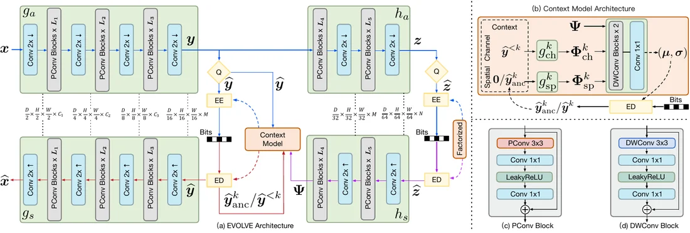

Ionization (H⁺) · 141 MB
A single EVOLVE model spans the full rate–distortion curve while encoding orders of magnitude faster than
INR codecs. At a matched compression ratio, TTHRESH collapses to 39.1 dB whereas EVOLVE stays faithful
at 47.6 dB — drag panel (c) to compare.
◆ Design Roadmap

We modernize a vanilla autoencoder into EVOLVE through progressive macro-design, micro-design and
block-size upgrades. Bars give the compression ratio, stars give PSNR, and the right column lists
encoding / decoding time; a hatched bar marks a modification that was not adopted.
Trained on only a 303-volume roadmap subset, the final EVOLVE already surpasses conventional
compressors (TTHRESH, ZFP, SZ3).
01 Abstract
Large-scale scientific simulations generate volumetric data at rates that far outpace advances in
storage and network bandwidth, making effective lossy compression increasingly critical. Conventional
compressors often struggle to preserve fine structural details at high compression ratios (CRs), and
implicit neural representations (INRs) require costly per-volume optimization and produce models with
fixed CRs. We present EVOLVE, an autoencoder-based volume compression framework with three key
contributions: a large-scale cross-domain database of 6,376 volumes from 21 simulations
curated via perceptual hashing; a redesigned autoencoder that incorporates carefully chosen
macro- and micro-designs to substantially improve expressive power and compression capability; and a
learnable gain mechanism with a three-stage training strategy that enables variable-rate
encoding, allowing a single model to support continuous CR adjustment at inference time. EVOLVE achieves
substantially higher CRs than conventional compressors at comparable reconstruction quality, while
offering compression speeds orders of magnitude faster than INR-based methods.
02 Contributions
i
Cross-Domain Database
6,376 volumes drawn from 21 scientific simulations, curated by perceptual hashing for diversity, so
the optimized model learns features that generalize across unseen volumes within the covered domains.
6,376 volumes · 21 sims
ii
Redesigned Autoencoder
We re-examine the design space of AE-based compressors and fold a set of macro- and micro-designs into
a vanilla AE, sharply improving expressive power and rate–distortion performance.
design-space exploration
iii
Variable-Rate Encoding
A learnable gain mechanism trained with a three-stage strategy lets one model cover a wide,
continuous range of compression ratios — no retraining, no per-rate checkpoints.
one model · any CR
03 Method Overview

EVOLVE encodes a volume into a latent representation, modulates it through a learnable gain unit for
variable-rate control, and entropy-codes it with a context model. A single trained network decodes
across a continuous spectrum of compression ratios.
04 Interactive Comparisons
Compare any two methods on unseen datasets. Pick a render mode and dataset, choose what
goes on each side of the divider, drag to wipe, and toggle the per-voxel error map.
Render
Dataset
Left
Right
Error map
05 vs. INR Compressors
EVOLVE against per-volume INR codecs — SIREN, NeurComp, ECNR, Instant-NGP, fV-SRN,
AMGSRN++ and IDLat. Unlike these, EVOLVE needs no per-volume optimization: a single pretrained model
encodes any unseen volume in seconds, at substantially higher compression ratios.
Render
Dataset
Left
Right
Error map
06 Out-of-Domain · Scanned CT Data
Scanned CT volumes (Open SciVis) are a harder, out-of-domain test: they are
near-lossless targets (≈ 50 dB) and lie entirely outside EVOLVE's training
distribution, which contains only simulation data. Even so, on volumes whose statistics fall close enough
to that distribution — chameleon and stag beetle — EVOLVE clears the
near-lossless bar and compresses far harder than any baseline (stag beetle: 50.5 dB at
3,830×, 3.6× the next best). We also include foot as a failure case, where quality
saturates at 33.7 dB — out-of-domain success tracks how far the data drifts from the training
distribution, not a blanket guarantee.
Dataset
Left
Right
Error map
07 Rate–Distortion
A single EVOLVE model traces full rate–distortion curves in both fidelity (PSNR) and
perceptual quality (LPIPS), staying on top across the entire compression-ratio range while conventional
and INR-based compressors fall away.